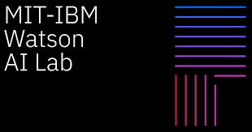
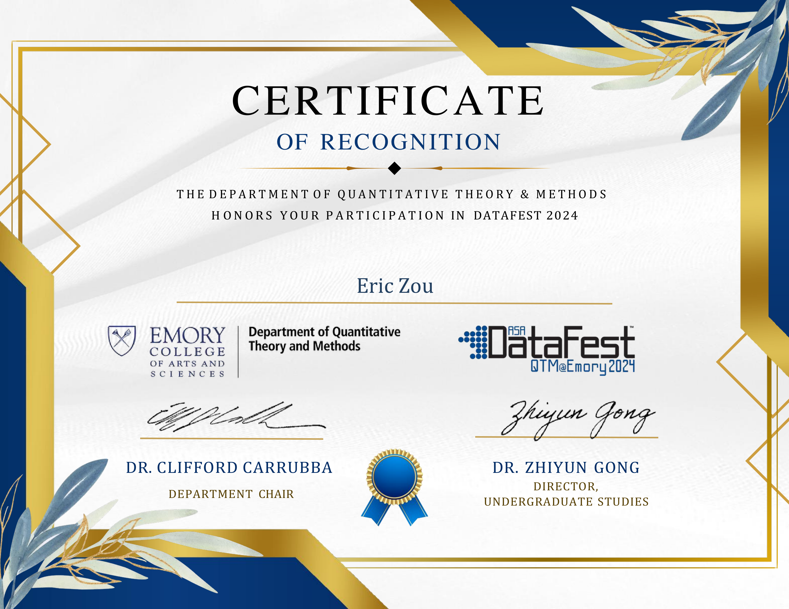
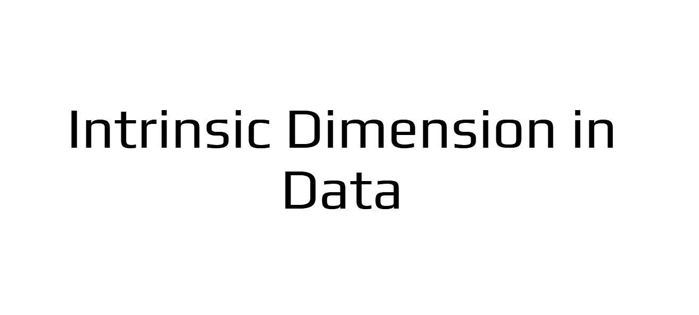

Project 1 – Xi’s Lab REU
Research assistant at Xi’s Lab, focused on Multimodal Image Reconstruction.
Learn More

Project 2 – MIT AI Watson Lab Assistant
Research Assistant under Dr. Jie Chen, focused on efficient implementation of LoRA.
Learn More

Project 4 – MCM Competition
Developed a model analyzing stair wear over time for the Mathematical Contest in Modeling.
Learn More

Project 5 – DataFest Competition
Analyzed educational engagement on CourseKata, enhancing learning efficiency.
Learn More

Project 6 – Atlanta Mathematics of Data Science Bootcamp
Explored a χ²-GAN + WGAN hybrid architecture.
Learn More